Projects¶
This is a website documenting projects of Radomir Dopieralski, also known as deshipu. Most of those projects were originally published at hackaday.io.
Recent Updates¶
The most recent new content:
Project List¶
The list of all projects. You can also see all Posts, or search by Tags.
-
Bluetooth gamepad shield for Xiao.

-
Tiny handheld with OLED and XIAO.
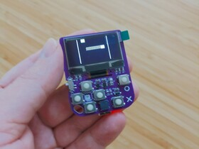 -
A 0.66” I2C OLED display as a Simple Add-on.

Badge Ribbon for CircuitPython
Improve your paper conference badge with some blinking lights.

-
An cute astronaut sitting on your shoulder.

-
a 200% version of Fluffbug robot

-
Fluffbug but with smart servos

-
Fluffbug but smaller

-
Fluffbug, but with a Pi Cow

-
Continuing on improving CircuitPython gaming handhelds.

-
Learn Python programming with an affordable gaming handheld.

-
Playing with old-school 7-segment LCD displays

-
Will ESP32-S3 work in a keyboard?

-
Is that a keyboard in your pocket?

-
36 keys should be enough for everyone

-
OV2640 shield for the S2 Mini ESP32-S2 board.

-
Type up-side-down!

-
50% staggered low-profile keeb

-
Use phone’s trackpad as a pointing device.

-
A necklace that plays animated GIF images

-
They just keep on coming!

-
Cheap four-legged insect robot

-
Make it run CircuitPython

-
The uGame console, but with an ESP32-S3 chip.

-
PewPew in a business card form factor.

-
Play without annoying the neighbors
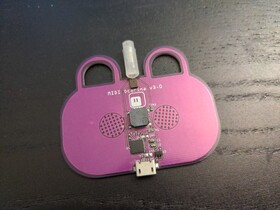 -
A low-profile 65-key ergonomic keyboard

-
Minimal macro keyboard

-
Atreus, just flat.

-
An ergonomic low-profile 65% keyboard.

-
Flat Planck

-
Make a game console from any Feather
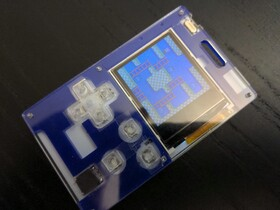 -
A 40-key chocolate-bar mechanical keyboard.
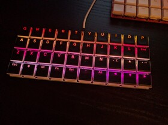 -
Cheapskate version of Adafruit Feather M0

-
A FeatherWing with three keyboard keys.

-
A low-profile mechanical keyboard

-
A minimal split keyboard build.

-
Protect your sanity
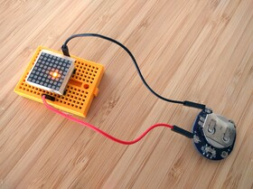 -
Add a user interface to a D1 mini

-
Use all your D1 Mini shields with the Itsy Bitsy

-
A PewPew with a display.

-
A daughterboard with a capacitive gesture sensor for the Adafruit Feather boards.

-
Hacking on Adafruit’s PyBadge

Accelerometer Shield for D1 Mini
For all your shaky user interface needs.
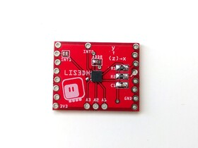-
A base station of all your blinking lights

-
Skull-shaped CircuitPython board.

-
A Python-based micro game console, optimized for game development workshops.

-
Convenient indicator LEDs for your breadboard
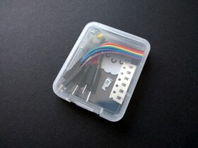 -
An easy to build spider robot kit.

-
Put screens on your jewelry.

-
A handheld running CircuitPython and cheap enough for a badge.
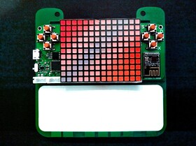 -
Describing all those fancy displays.

Stage, a Tile and Sprite Engine
A library for MicroPython for drawing tiles and sprites on a RGB SPI screen.
-
Make it act as a USB disk and just copy files on it.

Coin Battery Shield for D1 Mini
Small battery for your ESP8266 devices.

-
A tiny 8x8 thermal camera.

-
Arcade games on the Micro:bit

-
A handheld game console programmable with (Micro/Circuit)Python.

-
A minimal CircuitPython board.
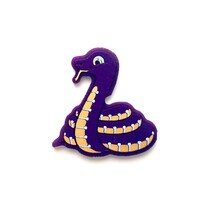 -
Add 16 extra GPIO pins to your ESP8266.

-
Some techniques for designing PCBs using Fritzing

-
Add-on boards for the Adafruit Trinket M0.

-
A 160x80 color LCD display that goes on top of the Trinket
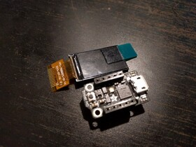 -
Yet another pi zero retro handheld game console.

-
A shield for powering Adafruit Feather board.
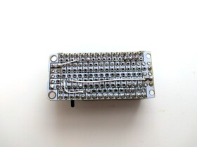 -
A shield for Adafruit Feather boards with buttons and a LED matrix display, for simple games.

-
Add 12 analog pins to the D1 Mini ESP8266 board

-
Simple PCA9685-based servo shield for OpenMV

-
Shields for the D1 Mini ESP8266 board using the ISSI chips
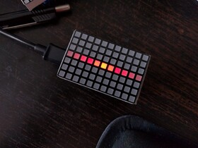 -
A simple display for weather forecasts.
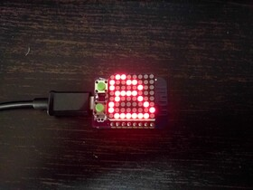 -
Experimenting with a simple delta robot

-
The paranoid android.
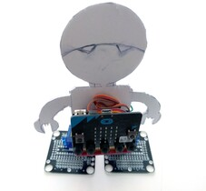 -
Spider robot powered by Adafruit Feather boards and CircuitPython.

-
A version of Tote with the D1 Mini ESP8266 board as a brain.

-
Adds some buttons to your ESP8266 board.
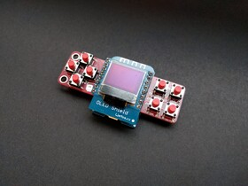 Mechatronic Ears on the Micro:bit
A version of the mechatronic ears made with a BBC Micro:bit.

-
Create and flash new firmware for the WeMos D1 Mini Motor Shield.
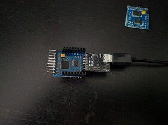 -
A shield for the D1 Mini ESP8266 board with HT16K33 chip and 8x8 mini LED matrix.

Servo Breakout for WeMos D1 Mini
Connect servos to your ESP8266 dev board.
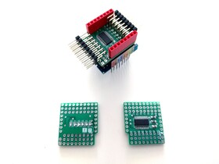Various Micropython Libraries and Drivers
A collection of miscellaneous libraries and drivers for Micropython

-
A robo-pet

-
Small serial terminal for debugging your robots
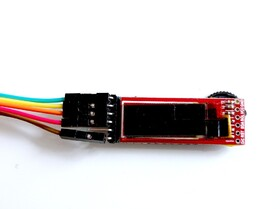 -
A cube that shows you the way

-
Type at 300 words per minute!

-
Special edition of Tote for the Belgrade workshop.

-
Wearable cat ears that move

-
Affordable quadruped robot powered by a Pi Zero

-
A simple bipedal robot controlled by Micro:Bit

-
A simple robot based on the BBC micro:bit.
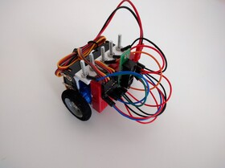 -
A keyboard mod.
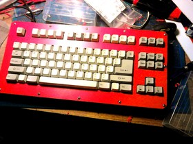 -
A small ATtiny85 board playing the Nyan Cat tune.

-
Join this project to talk about robots!
-
A prop that looks like a bomb from the movies.

-
I’ve got a MeArm and I’m going to do science to it.
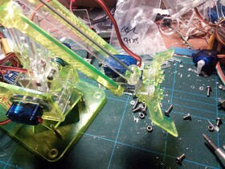 -
A working model of a Logikoma from “Ghost in the Shell: Arise”.

-
A small display for reading your robot’s serial data debug output.

-
8x8 LED matrix + Arduino Pro Micro
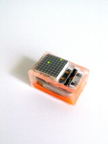 -
Rank the talk you have just attended at a conference, by pressing one of the three buttons.
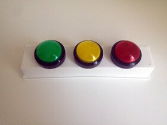 -
A small walking robot with a mammal-like configuration of legs.
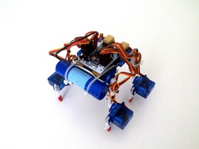 -
Affordable spider robot
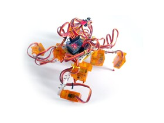 -
Collection of modules for OpenSCAD representing popular hobby parts, such as servos, motors, microcontroller boards and modules.

-
Two legs, four servos, ATtiny85 for brains

-
Scrapped. See Hexapod Henk MkII.

-
Cheap and simple tabletop quadruped robot controlled with Python.

-
The tinniest Arduino quadruped robot.